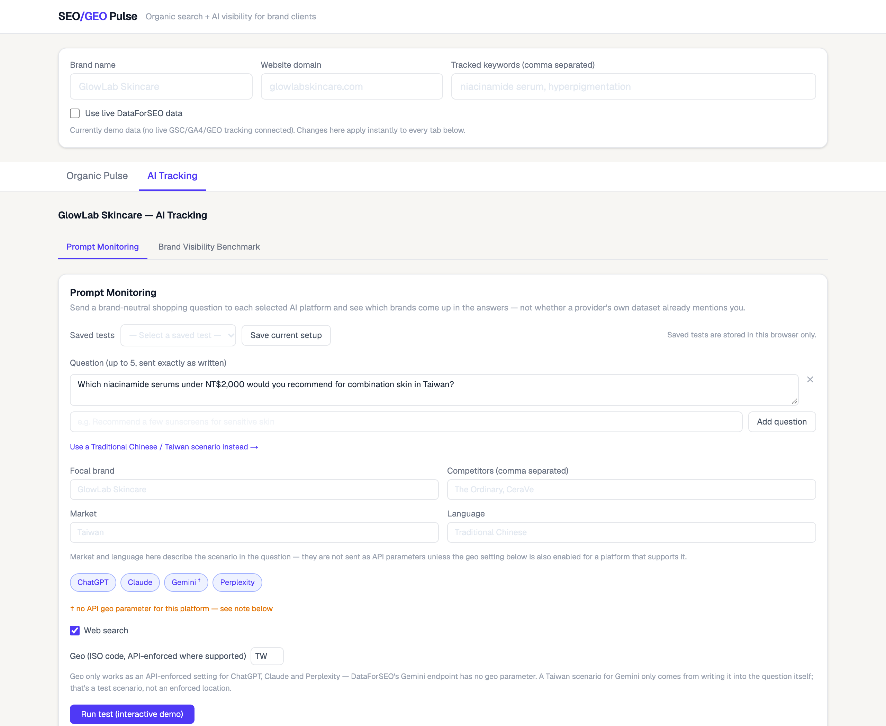
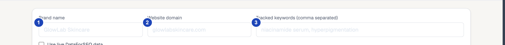
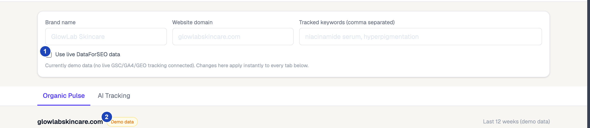

AI Workflow Design · Self-Initiated Project
From reporting need to working prototype—with AI
I designed an SEO/GEO reporting workflow and used Claude Code to build it: a dashboard that asks the same question across Google, ChatGPT, Claude, Gemini and Perplexity, and shows which brands come up.

Prompt Monitoring · Interactive demo — sample responses, not real AI output
I framed the business question, evaluated vendor tradeoffs, and set scope. Claude Code handled implementation and live debugging.
Built and wired to live APIs · Verification status below
Why I built this
Why I built a custom monitoring tool
Reviewing AI search visibility for existing FMCG and fashion clients meant repeatedly checking where brands appeared, which competitors showed up, and what sources AI answers cited. I built a custom dashboard around the checks I actually use. That let me choose what to run and how often, keep API costs tied to usage, and avoid relying on add-ons bundled by larger SEO platforms.

Input scope — 1 brand name, 2 website domain, 3 tracked keywords. These three values drive every tab below.

Data boundaries — 1 the live-data toggle, off by default, 2 the status badge that names the current source. No live fetch was triggered for this screenshot, so it reads "Demo data."
How it was built
From requirement to shipped scope
Define
Define reporting needs, evaluate vendor tradeoffs, and set the initial scope.
Gather API documentation and pricing information.
Defined requirements and a selected API provider — DataForSEO, the only one testable without a client budget behind it.
LLM Mentions offered broad visibility across DataForSEO's own dataset — useful for smaller brands, though its value depends on market and language coverage (its ChatGPT dataset is U.S./English only). I chose LLM Responses instead, so I could run the same shopping questions across ChatGPT, Claude, Gemini and Perplexity — including Taiwan-specific scenarios in Traditional Chinese — and inspect the actual answers behind each brand mention.
Build & test
Set functionality, data-labeling rules, and acceptance criteria.
Implement the dashboard and API integration, test real responses, and resolve integration issues.
Working integrations within the tested scope — 4 issues found and fixed via live calls, not code review alone.
Review & ship
Review the verified scope and decide what remains live, simulated, or withheld.
Reflect those scope decisions in the implementation.
A two-tab prototype with explicit data boundaries.
The broader process
How AI can support the SEO/GEO workflow
Monitor visibility
AI / automationConnect DataForSEO's APIs — Google rankings, provider mention data, and prompt-based brand monitoring across four AI platforms — and organize the results for review.
Human roleDefine the comparison scope and check data coverage and limitations.
Identify opportunities
AI supportCompare rankings and mentions against selected competitors to flag keyword and visibility gaps.
Human roleValidate the findings and prioritize by business relevance.
Support content revision
AI supportResearch existing content and draft revision proposals based on reviewed opportunities.
Human roleCheck evidence, brand fit, and accuracy before approving any change.
Coordinate the cycle
AI / automationConnect recurring monitoring, analysis, review, and follow-up on a schedule.
Human roleApprove actions and assess results.
Step 1 is implemented in this prototype. Steps 2–4 illustrate the proposed workflow.
What validation established
What's live, what's simulated, what's not built
The dashboard documents this field by field — an expandable "How these metrics are calculated" panel on each tab shows every value's source and formula, with worked examples for share of voice and prompt mention rate. What follows is the portfolio-level summary.
| Field | Status | Source / dependency |
|---|---|---|
| Google rank position | Live | DataForSEO SERP API |
| Prompt Monitoring (mentions, citations, history) | Live | DataForSEO LLM Responses API — ChatGPT, Claude, Gemini, Perplexity. Wired and error-tested; a successful response is pending DataForSEO account funding. Saved tests and run history are stored in the visitor's browser only, not on a server |
| Brand Visibility Benchmark (mentions, share of voice) | Live | DataForSEO LLM Mentions / Multi-Target Metrics API (provider dataset) — ChatGPT and Google AI Overview only |
| Brand Visibility Benchmark — historical trend | Live | DataForSEO LLM Mentions Historical API — same two-platform limit; data from 2025-08-01 onward |
| AI search volume | Live | DataForSEO AI Keyword Data API |
| Clicks / impressions / CTR | Demo data | Client Search Console data is intentionally excluded from this public portfolio |
| AI mention sentiment | Demo data | Illustrative sentiment values for this public demo |
This public demo uses simulated traffic metrics to avoid exposing confidential client data. API-backed visibility fields are identified separately above.